Getting Organized & Next Steps
The closing chapter of the PTM masterclass — a full recap of what you have learnt, the timeline from theory to live implementation, and the concrete next steps to climb the competency hierarchy.
You have finished 42 content videos and 64:19:18 of tuition — but the course itself insists the real work is only beginning. This final lesson maps everything you have learnt onto the Pro-Trader Systematic Framework, tells you exactly how long conscious competence takes, and sets you loose to trade live with real dollars.
The gist
- The PTM video series is 42 content videos totalling 64:19:18 (not counting videos 43 and 44); with the spreadsheet work that is easily over 100 hours, and with the IPLT series and its spreadsheet work included you have done roughly 150-200 hours of tuition and self-work to get this far.
- The road to conscious competence is 3-6 months of theory plus 9-12 months of profitable implementation = 12-18 months minimum; 'all the hard work really is done in the first six months.'
- You must trade live with real dollars after at least one quarter (a minimum of one quarter) of theory to make the jump from theory to implementation.
- The framework is Theory (Volatility/Opportunity Set -> Fundamentals, the MOST IMPORTANT part -> Timing, basics only) then Implementation (Real-Money Trading -> Trade Structure via Catalysts and POTM -> Risk Management, 'Stay in motion!').
- Statistical significance in your Trader Metrics / track record occurs over 100-150 trades across 12-18 months.
- You are now at Conscious Incompetence; live trading with a minimum number of trades moves you to Conscious Competence, and autopilot (Unconscious Competence) is achievable in 12-18 months over 100-200 trades.
- The Conscious Competence target: a 50%-100% return with approximately 20%+ annualized portfolio risk, running a 20-60 day long/short book managed via PRM and RRM.
- Next steps: pass the PTM exam, open a live account with real margin via an ITPM preferred broker, learn options via POTM as soon as possible while it is fresh, and stay true to the 4X ITPM Principles.
Congratulations — you have done it
- This is the end of the Professional Trading Masterclass video series — no easy feat.
- The lesson does two things: formalize a full recap of everything you have learnt, then set out how to get organized and the next steps to take.
- A single table lists every video, its title and time code; total run-time is 64:19:18 (excluding videos 43 and 44, which are summary and next-steps).
- That table is downloadable on the website so you can refer back to it — and show it to third parties — easily.
The masterclass opens its final chapter by acknowledging the sheer amount of work completed and by giving you a single reference sheet for the whole curriculum. The point is not a victory lap: it is to formalize the process before pushing you toward live implementation.
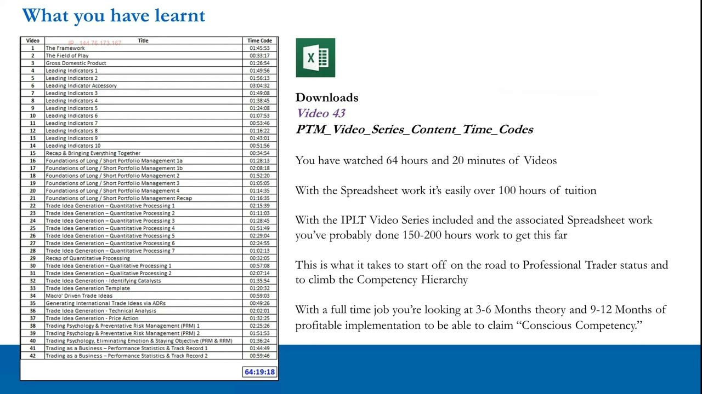
The tuition you have put in
- You have watched roughly 64 hours of videos (64:19:18 of content across the 42 numbered lessons).
- Add the PTM spreadsheet work and it is easily over 100 hours of tuition and self-work.
- Add the IPLT video series — which is really preparation for the PTM series — plus its spreadsheet work, and you have probably done 150-200 hours of total tuition and self-work to reach this stage.
- This is simply what it takes to start on the road to professional trader status and to climb the competency hierarchy.
The hours are stated plainly so you calibrate expectations: this is a serious body of work, and it is still only the theory stage. The volume is framed as the entry cost, not the finish line.
Theory to implementation: the 12-18 month timeline
- You are currently in the theory / learning stage and are close to moving on to the implementation stage.
- With a full-time job you are looking at 3-6 months of theory plus 9-12 months of profitable implementation to claim conscious competence.
- That is 12 to 18 months at a minimum to claim conscious competency.
- 'All the hard work really is done in the first six months.'
- You need to trade live with real dollars after at least one quarter of theory to make the jump from theory to implementation; success over 9-12 months of implementation is what makes you consciously competent.
The course is explicit that theory alone does not produce competence. The clock to conscious competence only starts once you are trading real money, and the emotionally hardest, most formative work happens in the opening six months.
Recap 1 — Preparation (IPLT + PTM 1-3)
- Groundwork comes first: the IPLT video series is perfect preparation for the PTM series and is strongly recommended before starting.
- The PTM series then overlaps in via The Framework (Video 1), which shows how the IPLT disciplines connect to the pro-trader systematic process.
- The Field of Play (Video 2) covers the stock market, and Gross Domestic Product (Video 3) links it to the macro backdrop.
- The IPLT series plus the first three PTM videos are all preparation to help a retail student understand how the professional process works.
Before the 'meat' of the process, the course lays a foundation: how markets behave and how they connect to GDP. This is the on-ramp that makes the rest of the machinery intelligible.
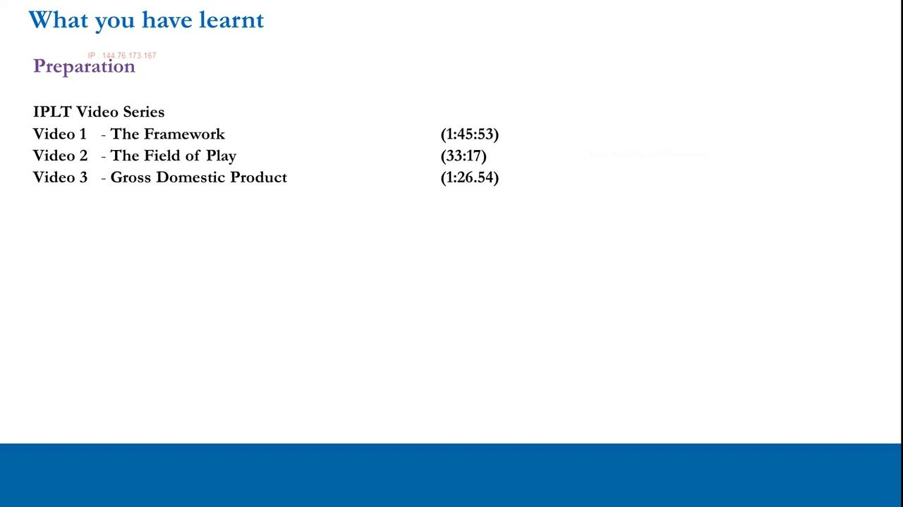
Recap 2 — Macroeconomics & Quantitative Processing
- Videos 4-14 cover all the main US leading indicators, and Video 15 recaps and brings everything together.
- The purpose: as long/short portfolio managers, to establish a portfolio bias at any moment in time.
- Macro is revisited later for direct macro-driven trade ideas (Video 34) and international trade ideas via ADRs (Video 35).
- The same quantitative processing applies internationally — you simply use international leading indicators.
This is the largest block of the course. Its output is a directional portfolio bias derived quantitatively from the macro cycle, and the same method extends cleanly to international markets.
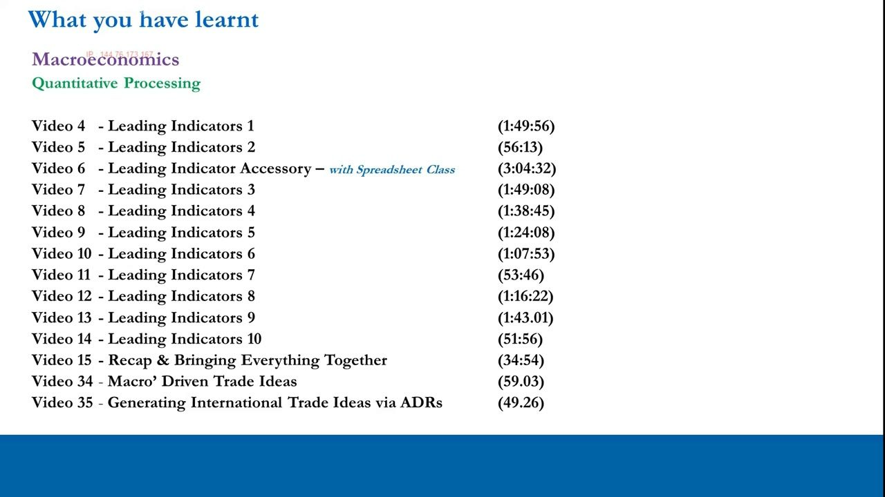
Recap 3 — Foundations of L/S Portfolio Management (16-21)
- Videos 16-21, taught with Christopher Quill, cover the key disciplines of long/short portfolio management.
- Topics include portfolio modeling, portfolio volatility, portfolio correlation and portfolio beta, with all the supporting resources.
- These disciplines are crucial for running regular weekly and monthly processes and understanding portfolio dynamics.
- They enable you to manage a portfolio well as you climb the competency hierarchy.
Once you can form a bias, you need the machinery to build and monitor an actual book. This section supplies the quantitative portfolio disciplines — volatility, correlation, beta — that make disciplined weekly and monthly management possible.
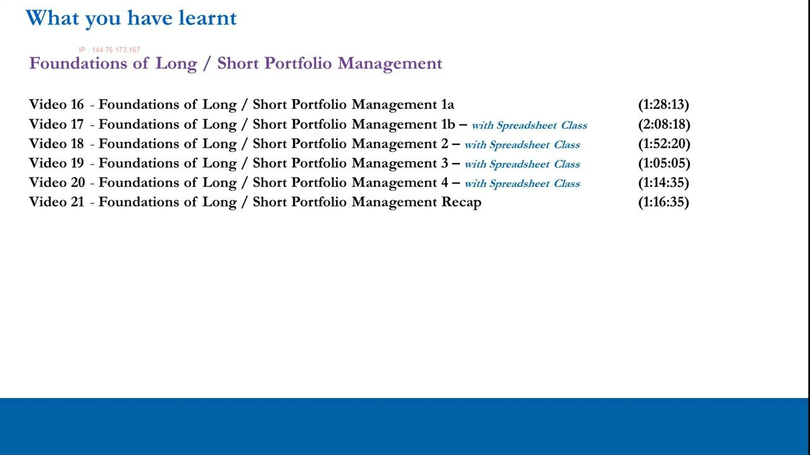
Recap 4 — Trade Idea Generation: Quant, Qual, Catalysts, Template, Timing
- Quantitative processing (Videos 22-29) identifies POTENTIAL trade ideas once you hold a macro-driven bias — it identifies, it does not yet generate.
- Qualitative processing (Videos 30-31) looks behind the numbers; the qualitative information must SUPPORT the quantitative data.
- Catalysts (Video 32) must qualify in the 20-60 day time horizon to turn an investment into a real trade idea.
- The Trade Idea Generation Template (Video 33) enforces consistency of process — no haphazard processes — because consistent process enables consistent returns.
- Timing via Technical Analysis (Video 36) and Price Action (Video 37): the charts and price action must at least begin to, or fully, support the fundamental thesis.
This is the heart of idea generation: fundamentals first (quant identifies, qual confirms), then a catalyst inside the 20-60 day window, then formatting into a template for consistency, and finally timing with basic TA and price action to confirm the entry.
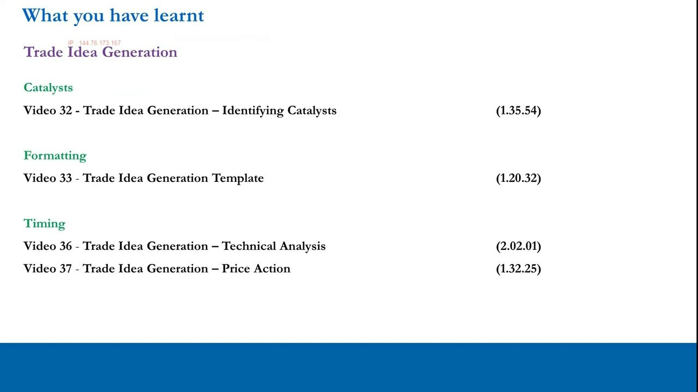
Recap 5 — Risk Management & Trading as a Business
- Trading psychology and Preventative Risk Management (Videos 38-39) cover the main psychology points and the parameters/measures to stay on top of it.
- Video 40 adds eliminating emotion and staying objective (PRM & RRM).
- Running your trading account as a business — Performance Statistics & Track Record (Videos 41-42) — is 'the cherry and the icing on the cake.'
- Strong performance stats and a solid track record are what separate the big boys from the rest of the market.
Positions demand risk controls, both preventative and reactive, and a psychology that does not fall in love with narratives. Treating the account as a business — measured by real performance statistics and a track record — is presented as the capstone discipline.
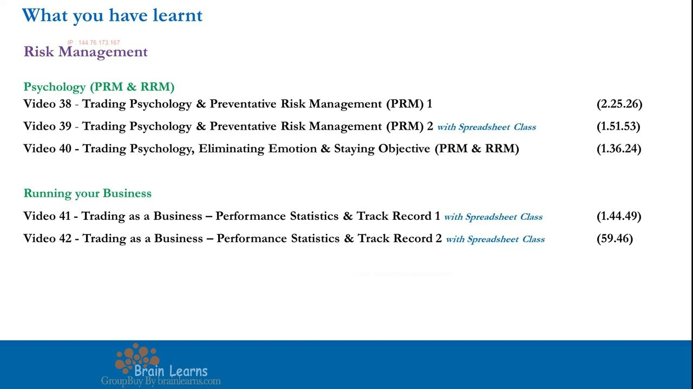
The Pro-Trader Systematic Framework
- THEORY: Volatility / Opportunity Set (IPLT) -> Fundamentals (the MOST IMPORTANT part — Quantitative then Qualitative process) -> Timing (technicals, only the basics required).
- IMPLEMENTATION: Real-Money Trading (self-trading or the mentoring program) -> Trade Structure (Catalysts, POTM + real-money experience) -> Risk Management (live portfolio — 'Stay in motion!').
- Trader Metrics / Track Record: statistical significance occurs over 100-150 trades across 12-18 months.
- The whole thing is one continuous L/S portfolio management process on the 20-60 day horizon.
The framework diagram ties every section into a single pipeline. Fundamentals dominate; timing is only basics; and the implementation half only counts once real money is on the line and enough trades accumulate for the metrics to be significant.
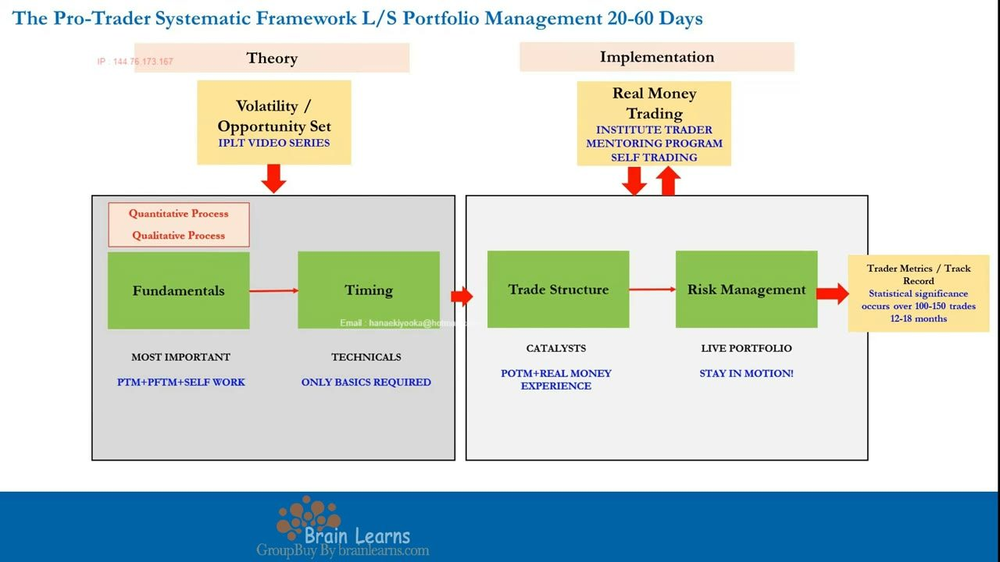
The Competency Hierarchy
- Four tiers: Unconscious Incompetence -> Conscious Incompetence -> Conscious Competence -> Unconscious Competence.
- You have left Unconscious Incompetence and now sit at Conscious Incompetence — you know you are doing it wrong and have the right information to learn.
- To reach Conscious Competence you must open a live account, trade, and accumulate a minimum number of trades over a minimum amount of time.
- ITPM alumni trading under 12 months remain at Conscious Incompetence; around 12 months and profitable, you climb to Conscious Competence and are defined as Institute Trader Tier 2.
- Unconscious Competence is doing all of the above on autopilot — achievable in 12-18 months over 100-200 trades.
The hierarchy is the course's map of learning applied to trading. Passing the exam and completing the theory only reaches Conscious Incompetence; the higher tiers are earned exclusively through live trades and time, not more study.
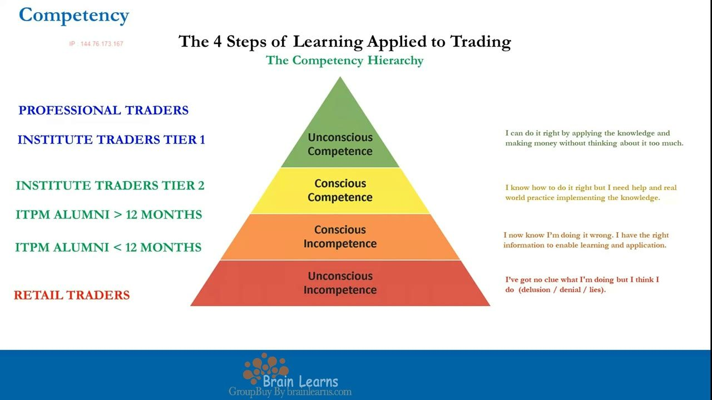
The Conscious Competence checklist
- Understands risk vs opportunity and volatility.
- Targets a 50%-100% return with approximately 20%+ annualized portfolio risk.
- Knows the difference between a trade idea and an investment; produces a constant flow of high-quality trade ideas.
- Competent at 20-60 day entry and exit timing, at optimal trade structuring (including expressing ideas with equity options), and at building a L/S 20-60 day portfolio.
- Has a handle on trading psychology (does not fall in love with narratives or positions), manages the 20-60 day L/S book via PRM and RRM, and hits the trading stats needed for self-sustainability and consistency.
This is the concrete definition of the next rung. It fuses every course discipline into one profile: a specific return-and-risk target, disciplined 20-60 day L/S execution, sound psychology, and a track record that proves consistency.
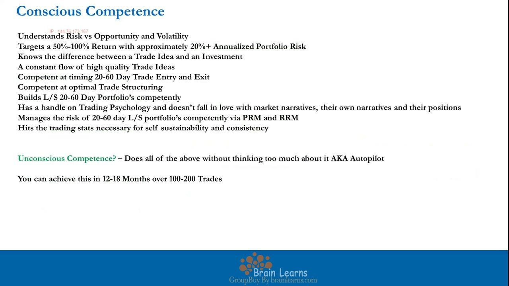
Getting organized: next steps for Institute Trader status
- Pass your PTM examination, then open your trading account and deposit your margin (there is a minimum) to gain Institute Trader status.
- Turn your new knowledge into cold hard dollars via implementation with real money — the only way to reach the next stage of the hierarchy.
- Apply for a live account with an ITPM preferred broker at https://www.itpm.com/trading-accounts/; ITPM receives no ongoing commissions or part of any spreads you pay on stocks or options.
- Learn options properly and do it sooner rather than later — ideally immediately after IPLT and PTM while it is fresh — via the Professional Options Trading Masterclass (POTM).
- Optional 1-on-1 mentoring with an ITPM Senior Trading Mentor (https://www.itpm.com/trader-mentoring/) can speed up progress — but it is not a shortcut or hack; you still put in the work.
The path is exam, then real money. Options are urged early while the material is fresh, and mentoring is offered as an accelerator that still demands your own effort — explicitly not a bypass of the hard work.
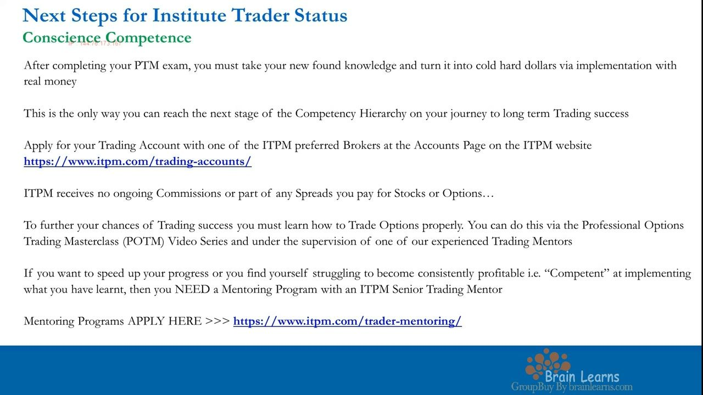
Stay true to the plan — the 4X ITPM Principles
- 1. Self Sustainability — do your own work, generate your own trade ideas, no copy trading whatsoever.
- 2. Work Ethic — put 'passion' to one side, be conscientious, and regularly implement the processes you have been taught.
- 3. Free Information — everything you have seen is literally free information; interpretation is what is key, and how you turn it into real dollars.
- 4. Work Smart not Hard — the markets do not care how hard you worked; eliminate the 97% of noise, process efficiently, and focus on the bottom line.
- Sign-off from Anton Kreil and Christopher Quill: it is time to move to implementation, get your head down, and get the results.
The masterclass closes on its guiding principles: self-reliance, conscientious repetition, the reminder that information alone is free (interpretation is the edge), and a demand to work smart and focus on making money rather than logging face time.
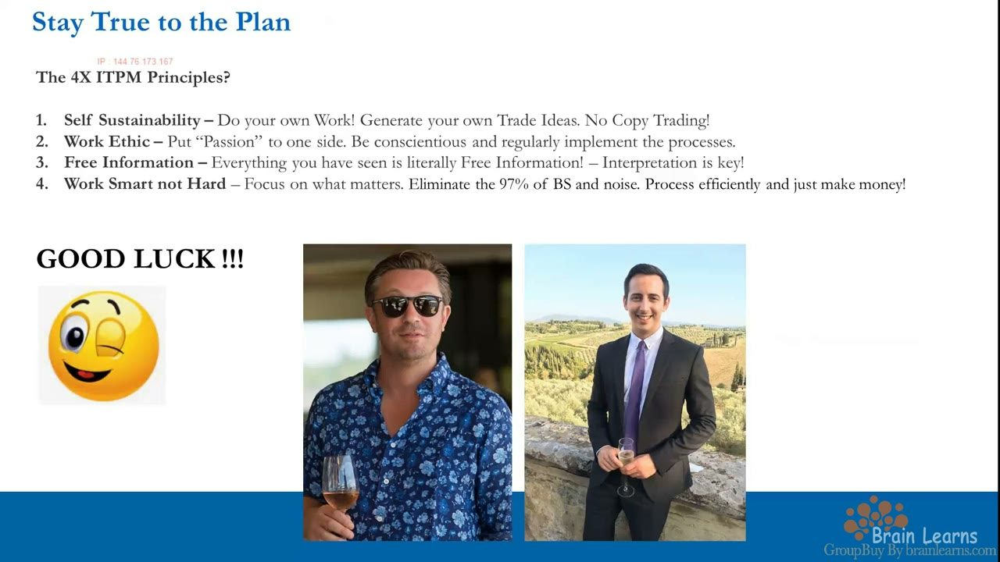
Glossary
- Competency HierarchyThe four-tier model of learning applied to trading: Unconscious Incompetence, Conscious Incompetence, Conscious Competence, Unconscious Competence.
- Conscious IncompetenceThe tier a student sits at on finishing the theory: you know you are doing it wrong but now have the right information to learn and apply it.
- Conscious CompetenceThe next target tier, reached via live implementation over a minimum number of trades and time (~12 months, profitable); ITPM defines this as Institute Trader Tier 2.
- Unconscious CompetenceThe top tier — doing everything correctly on autopilot without much conscious thought; achievable in 12-18 months over 100-200 trades.
- Pro-Trader Systematic FrameworkThe end-to-end process split into Theory (Volatility/Opportunity Set -> Fundamentals -> Timing) and Implementation (Real-Money Trading -> Trade Structure -> Risk Management), run as a 20-60 day L/S portfolio.
- PRMPreventative Risk Management — measures and parameters put in place before and while holding positions to stay on top of psychology and risk.
- RRMReactive Risk Management — the regular actions taken in the live account to manage risk and 'stay in motion.'
- Trader MetricsPerformance statistics and track record; statistical significance occurs over roughly 100-150 trades across 12-18 months.
- POTMProfessional Options Trading Masterclass — the ITPM course for learning to express trade ideas efficiently with equity options; recommended immediately after IPLT and PTM.
- IPLTThe introductory ITPM video series that serves as preparation and groundwork for the PTM masterclass.
- 4X ITPM PrinciplesSelf Sustainability, Work Ethic, Free Information, and Work Smart not Hard — the guiding principles to stay true to as you move from theory to implementation.